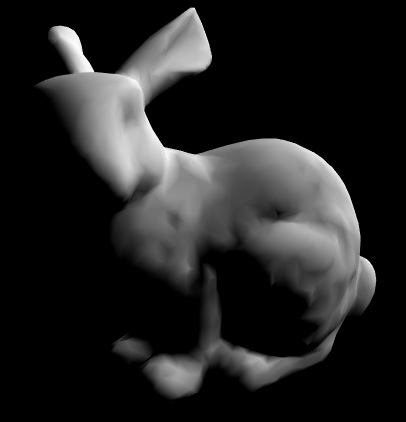
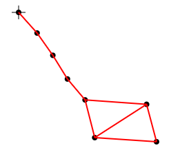

Master of Science in Software Engineering, a big fan of high performance GPGPU computing and computer graphics.
This is a DEM-based simulation designed to test the Newtonian lift concept.
This simulation doesn't solve the Navier-Stokes equations. The Navier-Stokes equations are amazing, they consider gas or a fluid as a continuum of high-level parameters such as velocity, pressure, density, viscosity, shear stress. But my idea was to replicate the same phenomena the Navier-Stokes equations predict using something simple. Something like a huge bunch of monoatomic molecules.
This is it. The simulation crunches 2M particles on the GPU using a highly parallel approach to construct a BVH-acceleration structure. This BVH-tree is necessary for making potential collision tests quickly. The collision response is a simple Hooke's law.
Check README.MD / Medium / Habr to know more about technical details.
More demos can be found on Youtube.
The project is inspired by Intro to parallel programming course by Udacity and some of GPU Gems 3 articles.
More demos can be found on Youtube.
Stanford Bunny is just a simple WebGL application with an asynchronous loading of the model, vertex and fragment shaders.
Constrained dynamics simulation is inspired by a Carnegie Mellon University's course.
The main feature of the simulation is that it's using ideal constraints as joints between material points, not springs. The simulation uses the explicit fourth-order Runge-Kutta method in order to solve an ordinary differential equation of the simulation state in the phase space.
If you're keen on the math model the simulation based on, please take a look at 'Constrained Dynamics' lecture.
This game was made in 2010-2011 for "Sozvezdie" ("Constellation") competition among schoolchildren. One of the rules of the competition was, that competitors were not allowed to use a third-party game engine. So I made it by myself using only C++ and OpenGL. Plus some additional libraries such as GLUT and Audiere.
The physics was simplified a bit because making a detailed simulation was too much for me back in school. But it was enough to get the first prize.
I should mention that the game uses some of the assets from Orbiter Space Flight Simulator and Space Shuttle Mission 2007 I couldn't have finished my competition project without these amazing simulators.
The code was way too messy. There won't be a link to it.